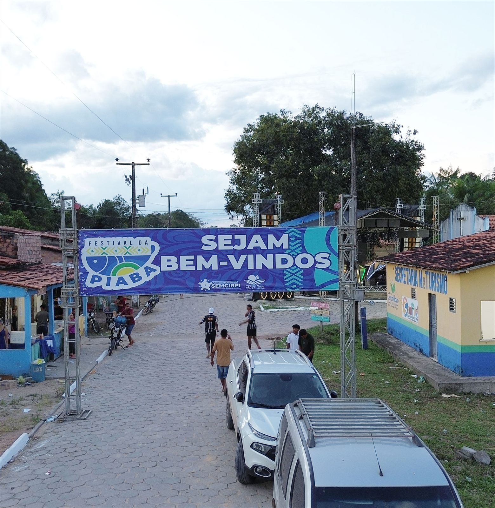

Balneários, rios e paisagens de descanso
O visitante encontra cenários ideais para banho, lazer em família, contemplação e experiências ao ar livre.
Ver atrativos


O turismo em Centro Novo do Maranhão revela rios, balneários, gastronomia regional, festas populares e experiências comunitárias que valorizam a identidade maranhense e transformam cada visita em memória afetiva.


.webp)

Turismo em destaque
O portal apresenta um recorte do que faz Centro Novo do Maranhão se destacar: encontro comunitário, sabores regionais, natureza viva e tradições que ampliam o valor da experiência turística.
Natureza, cultura, gastronomia, hospedagem e tradição organizadas para facilitar a descoberta do destino e reforçar sua presença digital.
O visitante encontra cenários ideais para banho, lazer em família, contemplação e experiências ao ar livre.
Ver atrativosFestas, música, culinária e manifestações culturais ampliam a força da identidade local.
Explorar culturaO destino se diferencia pelo acolhimento, pelo contato com a comunidade e por experiências mais humanas.
Ver hotéis e pousadasBalneários, hospedagem, gastronomia e contatos ficam reunidos em uma navegação direta e objetiva.
Abrir guiaCentro Novo do Maranhão fortalece sua presença digital ao reunir, em um só portal, atrativos turísticos, balneários, gastronomia, festas populares, roteiros e contatos oficiais. Essa organização amplia a visibilidade do destino no Google e ajuda o visitante a compreender com mais rapidez o que o município oferece.
O visitante encontra paisagens de rio, balneários, cultura popular, gastronomia regional e experiências que revelam a autenticidade de Centro Novo do Maranhão.
O roteiro se organiza de forma simples ao integrar natureza, alimentação, hospedagem e agenda cultural em percursos de um dia ou de fim de semana.
O destino se destaca por unir beleza natural, identidade cultural, hospitalidade e vivências locais em uma proposta turística consistente e acolhedora.
Centro Novo do Maranhão é um município com identidade cultural forte, hospitalidade reconhecida e grande potencial para o turismo de natureza, experiência e valorização das tradições locais.

Localizado a cerca de 206 km de São Luís, o município apresenta paisagens encantadoras, cultura viva e experiências autênticas no coração do Maranhão.
O portal organiza os principais atrativos, facilita o planejamento da visita e fortalece a identidade do turismo local com uma comunicação mais clara, profissional e inspiradora.
O destino combina descanso, tradição, sabores regionais e paisagens que preservam um ritmo mais autêntico de experiência.
.jpeg)
Experiências ligadas às paisagens, tranquilidade e conexão com o ambiente.

Tradições, festas, música, saberes populares e manifestações locais.
.jpeg)
Recepção acolhedora e experiências marcadas pela identidade comunitária.
Experiências, cenários e encontros que ajudam a compor o roteiro de quem pesquisa turismo em Centro Novo do Maranhão.

A comunidade Barreira Vermelha revela um cenário natural marcado pela presença do rio, da floresta e de paisagens que convidam ao lazer, à contemplação e ao descanso.
Natureza e experiência
O Festival da Piaba acontece todos os anos no mês de julho, com programação aos sábados e domingos. A festa reúne esporte, brincadeiras, música, alegria e tradições que movimentam a comunidade Barreira Vermelha.
Cultura e tradição
Sabores típicos, culinária maranhense e produção comunitária tornam a experiência mais autêntica, afetiva e conectada ao território.
Sabores da regiãoSugestões que ajudam a transformar a visita em uma experiência mais organizada, agradável e conectada ao ritmo local de Centro Novo do Maranhão.
Comece pelos balneários, siga para um almoço regional e termine o dia com paisagens, banho e tempo para desacelerar.
Ideal para quem quer conhecer o destino de forma mais autêntica, combinando agenda cultural, comida local e contato mais próximo com a comunidade.
Um percurso simples para visitantes que querem segurança, praticidade e ambientes agradáveis para curtir com crianças, amigos ou parentes.
As experiências se tornam mais completas quando o visitante combina balneário, refeição e agenda cultural no mesmo roteiro.
Junho e julho concentram grandes festas no calendário, mas os atrativos de natureza e lazer podem compor roteiros em diferentes épocas do ano.
Alguns espaços trabalham com agendamento, atendimento aos fins de semana ou produção de refeições sob encomenda.
Balneários, hospedagem e gastronomia com informações práticas para organizar a visita.
Espaços de lazer, banho, descanso e contato com a natureza.


Ambiente agradável para lazer em família, banho e contato com a natureza, com agendamento e opções de alimentação.


Destino para quem busca beleza natural, tranquilidade e uma experiência acolhedora, com opções de almoço feito na hora e vivência mais próxima da comunidade.


Saída de Centro Novo para o povoado Chega Tudo, com opções de almoço aos fins de semana e atendimento por agendamento.
Opções de hospedagem para quem deseja conforto e praticidade.
.webp)
.webp)


Hospedagem com conforto, boa localização e atendimento acolhedor.
Sabores locais e espaços gastronômicos para moradores e visitantes.

Comidas regionais, atendimento agradável e ambiente familiar.
A cultura local é um dos maiores patrimônios de Centro Novo do Maranhão e fortalece o turismo comunitário, afetivo e de experiência.
Quadrilhas, forró, cores, encontro da comunidade e celebrações que movimentam o turismo local.
Saberes populares, celebrações e manifestações que fortalecem a identidade local.
Produções e saberes manuais que representam a criatividade do território.
Pratos e receitas que contam a história e a diversidade cultural do município.
Esta seção valoriza a presença indígena no município de Centro Novo do Maranhão e reconhece a importância das aldeias Paracuyrena, Xiepihurena, Sítio Novo, Araçatiwa e Mucasal (Gurupiúna) como parte essencial da memória, da cultura e da identidade do território.
O município reconhece nas aldeias Paracuyrena, Xiepihurena, Sítio Novo, Araçatiwa e Mucasal (Gurupiúna) uma presença ancestral que amplia a riqueza humana e cultural de Centro Novo do Maranhão. Este espaço apresenta essa importância por meio de imagens e narrativas que valorizam a memória, o território, os saberes tradicionais e a contribuição dessas comunidades para a identidade local.

.jpeg)

.jpeg)


O São João de Centro Novo celebra tradição, cultura popular e encontro comunitário em uma das manifestações mais marcantes do calendário cultural do município.
Em junho, Centro Novo vive um dos momentos mais marcantes do seu calendário cultural. O Arraial Fogueira de Ouro reúne quadrilhas, forró, bandeirinhas, comidas típicas, apresentações culturais e a energia contagiante de uma festa que valoriza a tradição, fortalece a identidade local e acolhe moradores e visitantes em noites cheias de cor, movimento e celebração.


.jpeg)
.jpeg)
.jpeg)

.jpeg)
.jpeg)
Imagens que revelam a paisagem, a cultura e o potencial turístico de Centro Novo do Maranhão.
.jpeg)
.jpeg)

O calendário local movimenta o turismo, fortalece a cultura e amplia as oportunidades de encontro entre moradores e visitantes.
Programação junina com clima comunitário, música, dança, comidas típicas e valorização das tradições locais.
Categoria: Cultura popular e turismo
Atividades artísticas, encontros comunitários, apresentações e ações de valorização da cultura local.
Categoria: Cultura e comunidade
Acontece todos os anos em julho, aos sábados e domingos, com festas esportivas, brincadeiras, música e muita animação. A programação inclui jogos de futebol, competição de quem pega a maior piaba, canoagem, dança, desfile Garota Piaba, corrida do saco para crianças e disputa de tiro de baladeira.
Categoria: Tradição e identidade
Espaços para artesanato, produção local, sabores regionais e fortalecimento da economia criativa.
Categoria: Economia e turismo
Informações úteis para moradores, visitantes e parceiros do turismo local.
O visitante encontra balneários, cultura local, gastronomia regional, festas populares e experiências ligadas à natureza e à convivência comunitária.
Não. O portal também atende moradores, empreendedores, artistas, produtores culturais e gestores públicos.
Sim. O portal pode divulgar novos atrativos, eventos e iniciativas locais, fortalecendo a visibilidade do turismo no município.
Registros que ajudam a visualizar a beleza, a cultura e a energia do destino em movimento.
Vídeo da Comunidade Barreira Vermelha
Vídeo aéreo de Centro Novo do Maranhão
Vídeo da cidade de Centro Novo do Maranhão
Vídeo de Centro Novo do Maranhão
A equipe responsável oferece apoio para apresentar o destino, orientar visitas e fortalecer a divulgação dos atrativos locais.
secretariadeturismocnma@gmail.com
Rua do Comércio s/n - Secretaria Municipal de Turismo
Centro Novo do Maranhão - MA
Segunda a sexta: 8h às 17h
O portal pode crescer junto com a agenda local, com novos empreendimentos, novos eventos e experiências comunitárias.